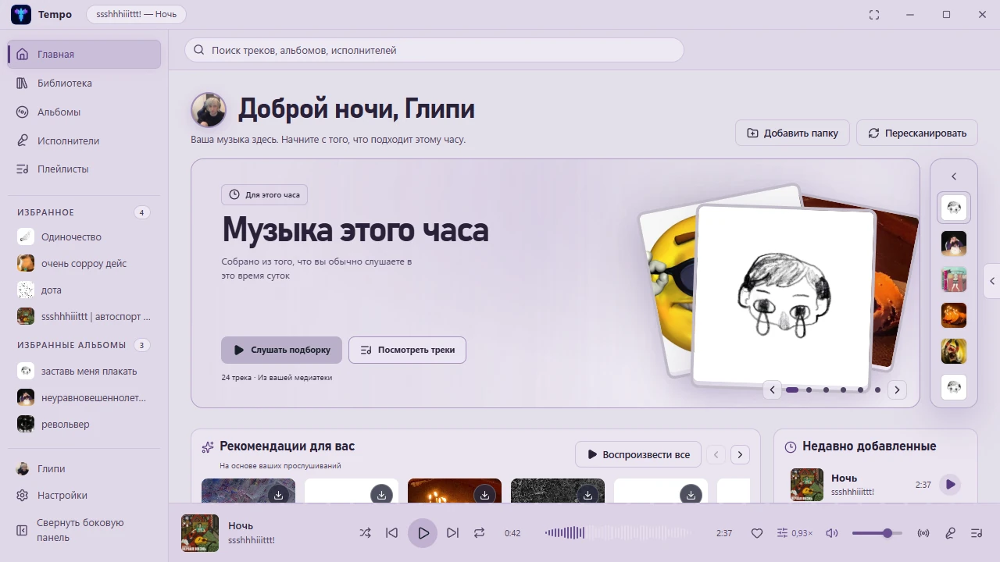
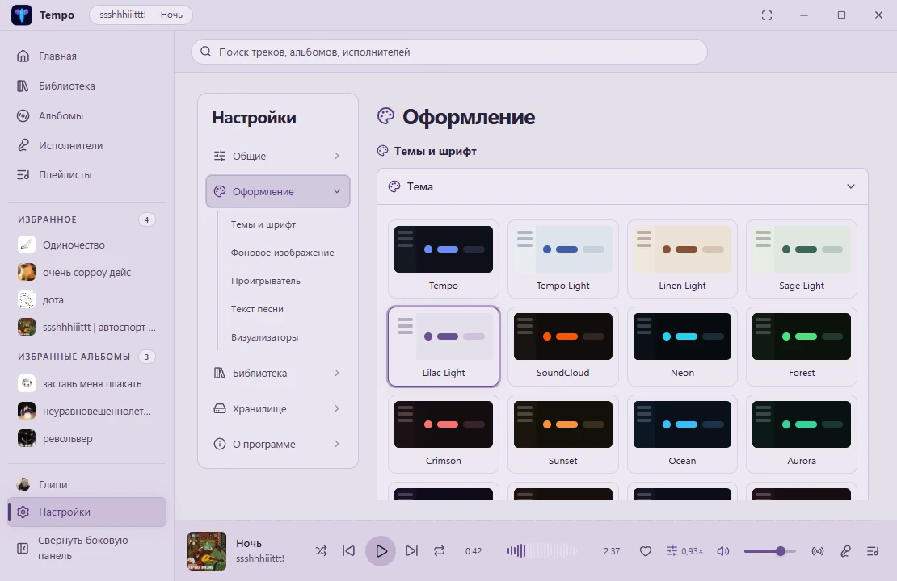
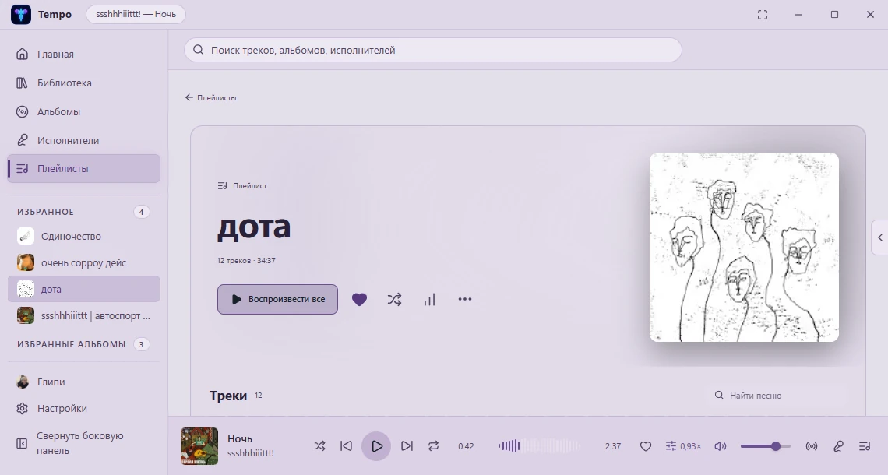
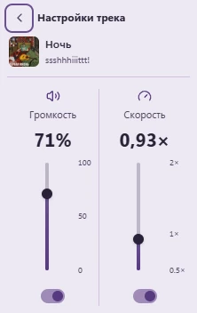

Миксы на первом месте
Раскрой боковую колонку подборок, чтобы увидеть их названия и состав.
Светлые темы, новая главная и точная история плейлистов.

Раскрой боковую колонку подборок, чтобы увидеть их названия и состав.
Рекомендации, лайки и недавние треки можно листать прямо на главной.
На страницах альбомов, плейлистов и исполнителей обложка загружается первой.
Выбери готовую палитру или собери свою. Tempo подберёт светлые или тёмные поверхности, а режим можно задать вручную.

Автоопределение, светлая или тёмная. Акцент и градиент остаются твоими.
Подкатегория прокручивает к нужному блоку. Переключатели и слайдеры теперь выглядят одинаково.
Отдельный переключатель добавляет белый текст с тонкой тёмной обводкой в светлой теме.

Открой график на странице плейлиста, альбома или исполнителя. Выбери месяц и нажми на столбик, чтобы перейти к деталям дня.

Tempo запоминает плейлист, из которого трек попал в очередь.
Оценивается по прослушиваниям треков из текущего состава плейлиста.
Перелистывай месяцы и раскрывай день до пятиминутных отрезков часа.
Нажми на трек или исполнителя в отчёте, чтобы посмотреть его статистику.
Две карточки по очереди показывают самые прослушиваемые треки.
Открой настройки трека через меню по правому клику. Tempo запомнит его громкость и скорость для следующих прослушиваний.


Нормализация заранее подготавливает уровень громкости и сохраняет измерения для повторов.
Tempo строит волну для локальных треков и YouTube Music. Пики можно хранить в кэше.
При сохранении тональности замедленные треки лучше сохраняют высокие частоты.
В «О программе» можно проверить музыкальные API, сайты, обложки, лирику и обновления прямо из Tempo.

У каждого сервиса свой статус, задержка и HTTP-код ответа.
Скопируй результаты или повтори проверку после смены сети.
Обложки занимают меньше памяти, а настройки подгружают тяжёлые элементы по мере открытия.